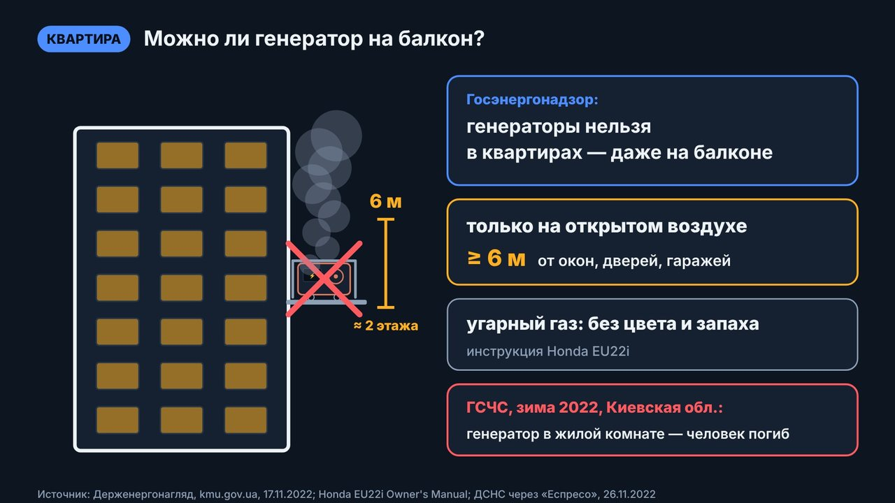
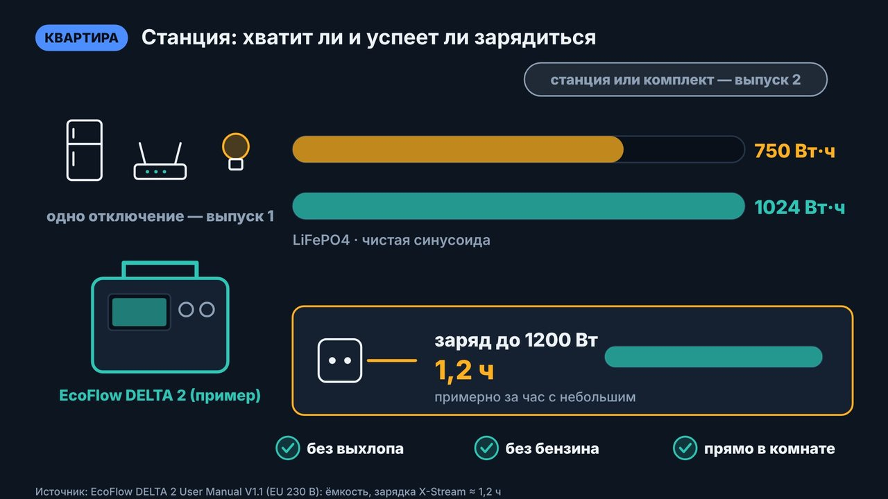
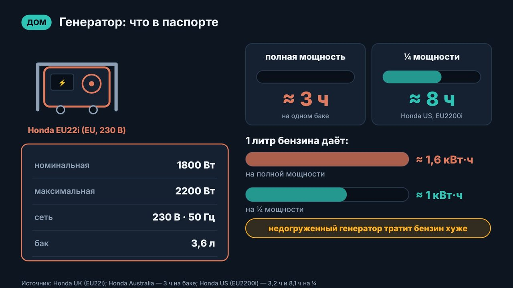
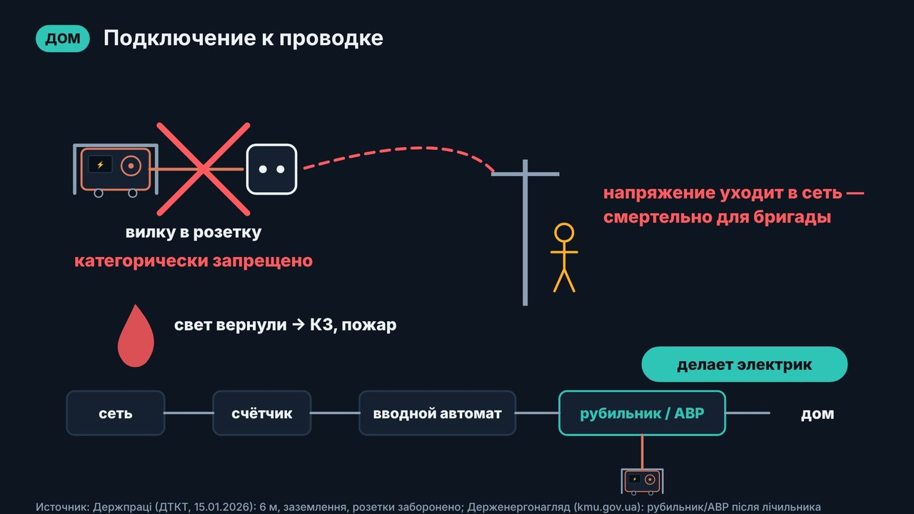

Генератор или зарядная станция: что выбрать для квартиры и дома
Андрей живёт на девятом этаже, его родители — в частном доме за городом. Одна зима, один вопрос: генератор или зарядная станция? Для квартиры ответ даёт закон, для дома — арифметика. Герои вымышленные, цифры — из инструкций производителей и правил украинских ведомств.
Ролик, 8:31. Не открывается? Смотреть на YouTube или читайте разбор ниже — в нём всё то же самое.
Впишите свою нагрузку, длительность отключения и данные станции и генератора — калькулятор покажет, хватит ли станции, сколько бензина и моточасов уйдёт и что даёт связка.
Открыть калькулятор1Квартира: генератор на балкон нельзя
Госэнергонадзор (Держенергонагляд) пишет прямо: генераторы нельзя использовать в квартирах — даже на балконе. Генератор ставят только на открытом воздухе, не ближе 6 м от окон, дверей и гаражей. Шесть метров — это высота примерно двух этажей; на балконе такого расстояния нет.
Причина — угарный газ. В инструкции Honda сказано: выхлоп содержит угарный газ, у него нет ни цвета, ни запаха. С балкона его затягивает в ваши окна и в окна соседей сверху. Зимой 2022 года ГСЧС сообщала об отравлениях в Киевской области: генератор работал в жилой комнате, человек погиб.

2Станция для квартиры
Холодильник, роутер и свет за одно отключение берут около 750 Вт·ч — так мы посчитали в выпуске 1. Для примера — станция EcoFlow DELTA 2: 1024 Вт·ч, аккумулятор LiFePO4, чистая синусоида. Одно отключение она закрывает с запасом. От розетки заряжается мощностью до 1200 Вт, полностью — примерно за 1,2 часа, так что хватает даже короткого окна со светом. Как выбрать между готовой станцией и своим комплектом — в выпуске 2.
Два условия из инструкции. Заряжается станция только при 0…+45 °C — на морозном балконе не зарядится, держите её в комнате. При пропадании света переключается на аккумулятор не дольше чем за 30 мс; производитель пишет, что это не ИБП с нулевым переключением, и не советует подключать серверы и рабочие станции. Холодильнику и роутеру такая пауза не страшна. Если ваш котёл после переключения перезапускается — оставьте ему отдельный ИБП из выпуска 3.

3Дом: сколько энергии на отключение
В частном доме котёл, холодильник, роутер, свет и насос скважины. Допустим, в среднем дом берёт 300 Вт. Двенадцать часов без света — 3600 Вт·ч. Станция на 1024 Вт·ч с учётом КПД инвертора (около 0,9, выпуск 5) продержит такой дом около трёх часов, на 12 часов нужно почти четыре таких станции — и зарядить их нечем, пока света нет.

4Генератор: что в паспорте
Пример — инверторный Honda EU22i для европейской сети: номинальная мощность 1800 Вт, максимальная 2200 Вт, 230 В 50 Гц, бак 3,6 л. На полной мощности бака хватает примерно на 3 часа. Для американской версии той же модели Honda указывает 8,1 часа на четверти мощности. Значит, литр бензина даёт около 1,6 кВт·ч на полной мощности и около 1 кВт·ч на четверти: недогруженный генератор тратит бензин хуже. У родителей нагрузка 300 Вт — меньше четверти. Если гонять генератор все 12 часов, по нашей оценке уйдёт около 5 литров и 12 моточасов.

5Где поставить и как подключить
Только на улице. Гоструда (Держпраці) требует не меньше 6 м до окон, дверей и стен дома, и не ставить генератор в гараже, подвале или под навесом, плотно прилегающим к дому. Генератор заземляют по инструкции производителя, делает это специалист.
Подключать генератор к проводке через розетку Гоструда называет категорически запрещённым: напряжение может уйти во внешнюю сеть, это смертельно опасно для ремонтной бригады. А если свет вернут, пока генератор работает, будет короткое замыкание и возможен пожар. Правильно — через перекидной рубильник или автомат ввода резерва (АВР), который стоит после счётчика и вводного автомата. Делает это электрик.

6Масло, бензин и шум
Масло по инструкции Honda меняют первый раз через 20 часов работы, дальше — каждые 50 часов или раз в 3 месяца. Если свет отключают через день по 12 часов, за месяц набегает 180 моточасов — это 3–4 замены масла. Бензин Гоструда велит хранить в плотно закрытой металлической таре, подальше от генератора, электрооборудования и обогревателей, а заправлять — только при выключенном и остывшем двигателе. И генератор слышно: днём привыкают, ночью он мешает и вам, и соседям.
7Генератор + станция
Генератор работает не постоянно: включается примерно на 1,2 часа, питает дом и одновременно заряжает станцию мощностью 1200 Вт. Вместе это около 1500 Вт — генератор загружен почти полностью, и литр бензина работает лучше. Потом генератор выключается, и около трёх часов дом тихо живёт от станции. За 12 часов без света двигатель наработает около 3,4 часа вместо 12 — моточасов и замен масла втрое меньше. Бензина, по нашей оценке, уйдёт около 3,3 л вместо 5,3 л. По инструкции станция принимает 220–240 В 50 Гц, инверторный генератор выдаёт 230 В 50 Гц.

Как выбрать
- Квартира — генератор нельзя даже на балконе: станция или свой комплект.
- Дом — посчитайте, сколько Вт·ч уходит за одно отключение.
- Если это меньше ёмкости станции и свет дают достаточно, чтобы её зарядить, — хватит станции.
- Если отключения длинные или в доме насос и котёл — нужен генератор: на улице, в 6 м от окон, дверей и стен, через рубильник или АВР, подключает электрик.
- Добавьте к генератору станцию — меньше бензина и масла, тихая ночь.
Источники
- Держенергонагляд — як правильно підключити електростанцію (генератор) до будинку, kmu.gov.ua, 17.11.2022: не в квартирах, навіть на балконі; 6 м від вікон, дверей, гаражів; рубильник або АВР після лічильника та ввідного автомата.
- Держпраці — вимоги безпеки під час роботи з електрогенераторами, ДТКТ, 15.01.2026: 6 м від стін, вікон і дверей; заземлення; підключення через розетки заборонено; зберігання пального.
- ДСНС через «Еспресо», 26.11.2022 — отруєння чадним газом на Київщині.
- Honda EU22i Owner's Manual — угарный газ, заправка, замена масла 20 ч / 50 ч; Honda UK — 1800/2200 Вт, 230 В, бак 3,6 л; Honda Australia — 3 ч на баке.
- 🌐 Honda US, EU2200i — 3,2 ч на номинале и 8,1 ч на ¼ нагрузки (европейские страницы этого не дают).
- EcoFlow DELTA 2 User Manual V1.1 — 1024 Вт·ч, 1800 Вт, заряд 1200 Вт ≈ 1,2 ч, заряд при 0…45 °C, EPS до 30 мс, вход 220–240 В.
Проверено 16 ноября 2026 г. Нашли ошибку — напишите в комментариях под роликом.